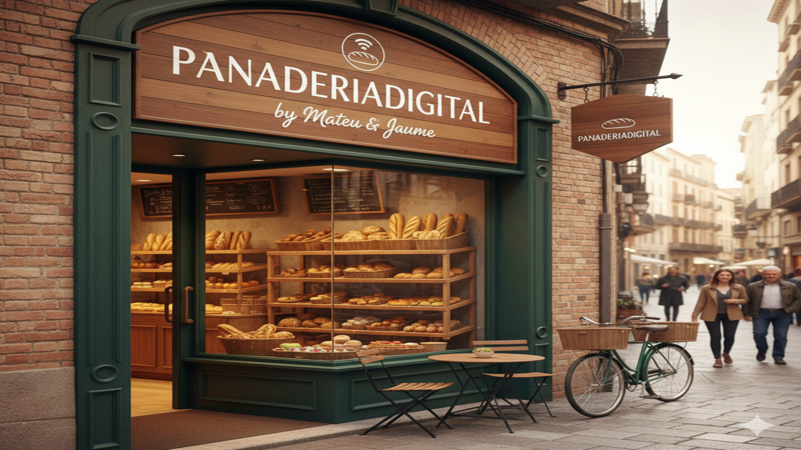

Nuestra especialidad: Somos Mateu y Jaume, y hemos traído la tradición panadera al siglo XXI. En PanaderiaDigital, combinamos las técnicas artesanales y la fermentación lenta que nos caracterizan con la comodidad de poder encargar y descubrir nuestros productos desde casa. Aquí encontraréis nuestra cuidada selección de panes de masa padre, bollería clásica y pastelería de temporada, elaborados con ingredientes de proximidad y la misma pasión de siempre.
